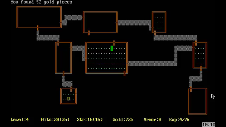
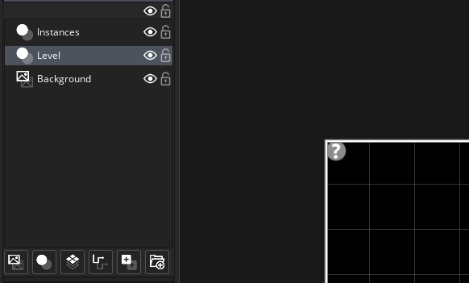
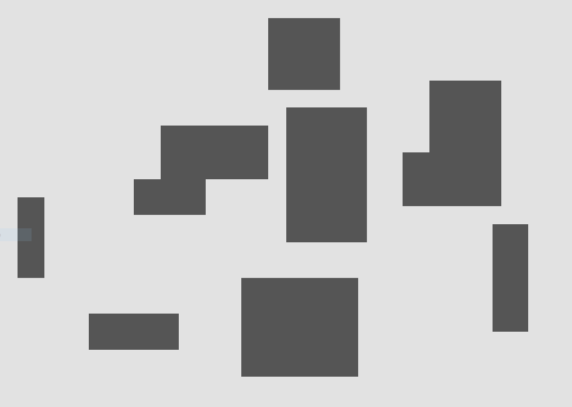
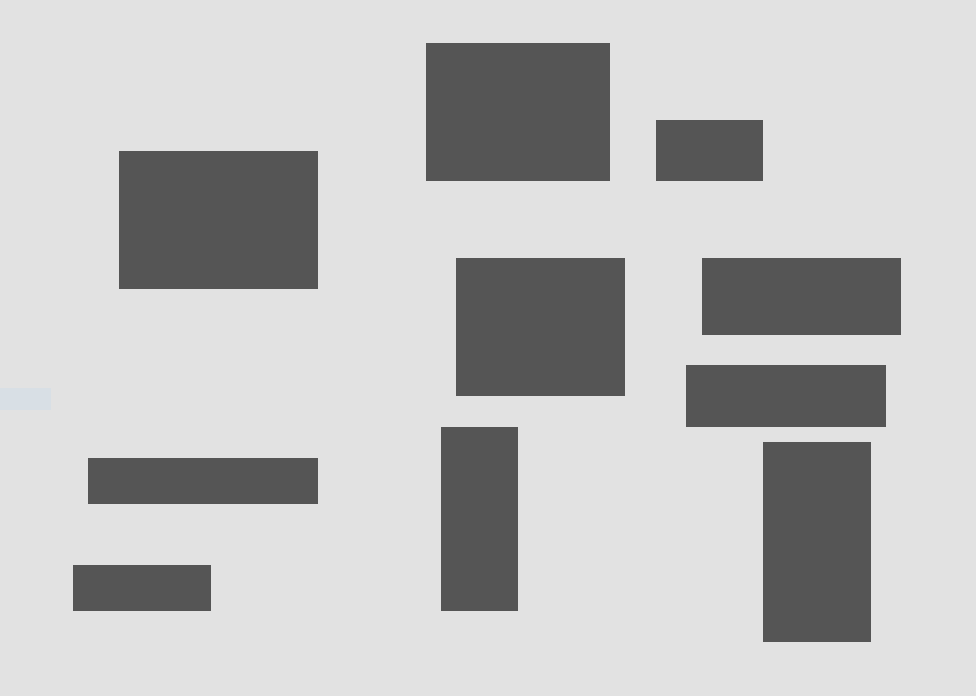

Procedural Level Generation in GML (Part 1: Setting up regions)
About Cartographer
For my first major project, I've decided to build a roguelike. For the uninitiated, a roguelike is a game that borrows features from the game Rogue (1980 – Unix) which include but are not limited to – permadeath, procedurally generated dungeons, and grid based environments.
The main focus of this project is to create a classic roguelike but with certain added mechanics that make the game unique. The defining element of the game (let’s call it Cartographer for the lack of a better name) is that the player controls a cartographer who has been commissioned to map out an ever changing dungeon completely, and then return to the surface. Naturally the focus of the game will be less on combat and more on stealth as the cartographer tries to avoid monsters and traps and tries to map out the dungeon as quickly as possible.
the Algorithm
There are tons of different algorithms out there for procedural level generation depending on the type of game. At first I thought I would try Binary Space Partitioning (BSP) to create my levels, but the final output just wasn’t what I was looking for. Cartographer is based around exploring winding tunnels that run into each other and larger open regions containing monsters and traps. So I decided to create a simple dungeon generation algorithm suiting my requirements. This algorithm borrows some elements of HeartBeast’s procedural generation algorithm which can be found here.
We start by creating a new Instance layer in the room in which the levels are to be generated. Next, create an object which will generate the level and place it at (0, 0) in the previously created Instance layer like so –
The whole process can be divided into two main steps- generating regions and drawing a path connecting these regions. This post is going to focus on the first part. Our first order of business would be to create a few macros. Create a new script and define a few macros indicating the type of tile to be placed at a location.
#macro CELL_WIDTH 16
#macro CELL_HEIGHT 16
#macro FLOOR -5
#macro WALL -6
#macro PATH -7
CELL_WIDTH and CELL_HEIGHT are constants having values equal to the width and height of each entity in the game. FLOOR, WALL and PATH are simply given arbitrary values for the game to identify the type and behaviour of the tile to be present at the point.
In the Create event of the game object, we enter the code to generate the room. In short, to generate the level, a grid structure is placed over the main room, and each cell of the grid is attributed a number from the defined macros which describe its behaviour. Later, tiles can be imported onto the room corresponding to their respective cells. For the grid, we use an in-built data structure offered by GMS2 called a DS Grid. A 2D array can be used instead, but using a DS Grid provides more functionality which could be handy later on.
width = room_width div CELL_WIDTH;
height = room_height div CELL_HEIGHT;
grid = ds_grid_create(width, height);
ds_grid_set_region(grid, 0, 0, width, height, WALL);
width and height are the number of columns and rows respectively. The ds_grid_create function creates a grid of width columns and height rows, and stores it in a variable grid. The next function then basically superimposes the grid over the map, and initializes the value of each cell with WALL.
var region_count = 10;
while(region_count) {
var corner_x = irandom_range(2, width-5);
var corner_y = irandom_range(2, height-5);
var region_width = irandom_range(3, 15);
var region_height = irandom_range(3, 15);
Next we set the number of regions to be created, in this case 10. In a while loop repeated 10 times, the coordinates of the region are determined randomly and then the region itself is drawn. The x and y coordinates of the region are selected from this specific range so as to ensure they do not leave the grid. The width and height of the region is also determined randomly.
while(true) {
if (corner_x + region_width >= width-2) {
region_width = irandom_range(3, 15);
corner_x = irandom_range(2, width-2);
}
else if (corner_y + region_height >= height-2) {
region_height = irandom_range(3, 15);
corner_y = irandom_range(2, height - 2);
}
else break;
}
To make sure the right and bottom ends of the regions do not leave the room, the location of these edges are checked repeatedly. If they fall outside the permitted area, the parameters are re-rolled.
for(var _x = corner_x; _x < region_width + corner_x; _x++) {
for(var _y = corner_y; _y < region_height + corner_y; _y++) {
grid[# _x, _y] = FLOOR;
}
}
region_count--;
Finally the parameters of a valid room is obtained, and with these values the cells that are part of the region are attributed with FLOOR values. After setting up tilesets for the floor and wall tiles, the generated room will look something like this –
The final result may look a bit ugly in many cases because of the overlapping of regions. This can be solved easily by adding a for loop to check if the area already has FLOOR cells and repeats the main loop again if it does.
var check_overlap = 0;
for(var _x = corner_x; _x < region_width + corner_x; _x++) {
for(var _y = corner_y; _y < region_height + corner_y; _y++) {
if (grid[# _x, _y] == FLOOR) check_overlap = 1;
}
}
Modify the loops which actually draw the FLOOR cells by nesting them in an if statement which checks if the variable check_overlap is 0 and only then change the values of the cells. This will give a room with perfectly defined regions that do not overlap each other. The code can be further modified so that the edges of different regions do not touch each other and there is always a section of wall between them, which will give the room a cleaner look.
In part 2 of this post, we’ll be making a path joining the rooms and also creating basic tiles for the game. To anyone trying this out – hacking and improving the code is highly encouraged as it helps you get more familiar with he way things work. Till the next post, happy building :)